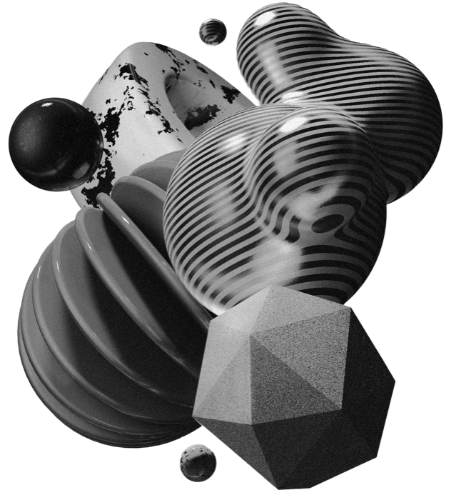
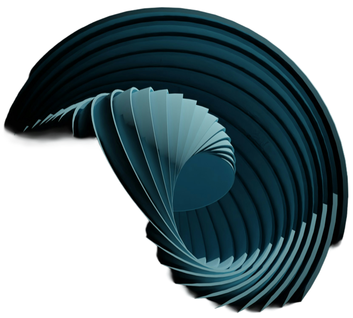
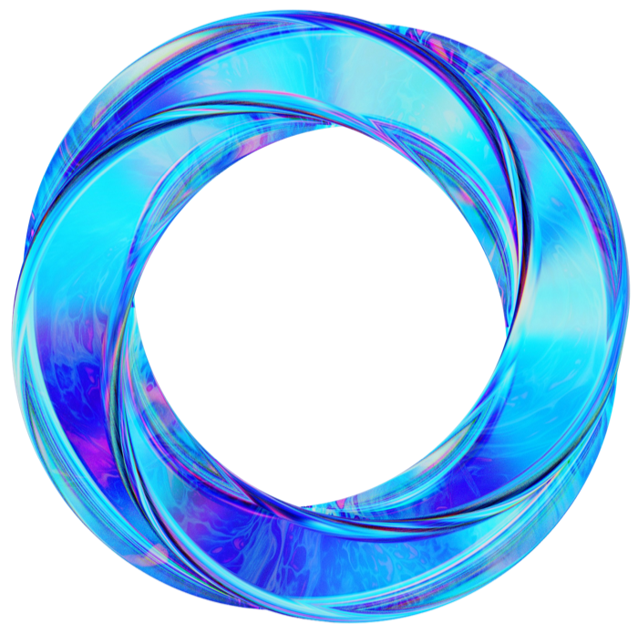
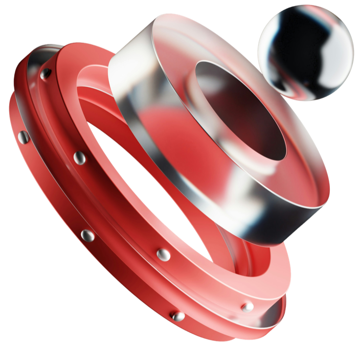
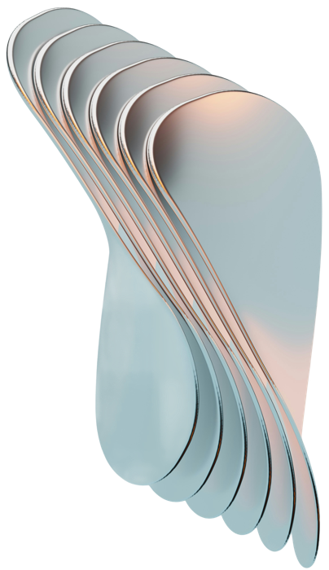
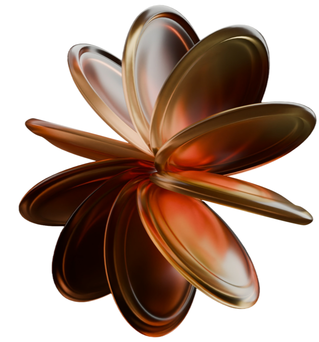
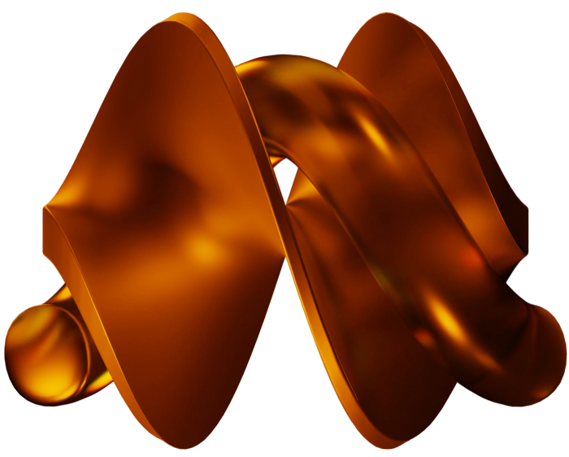
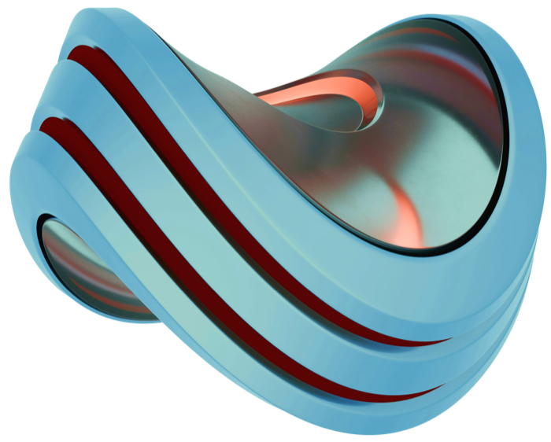
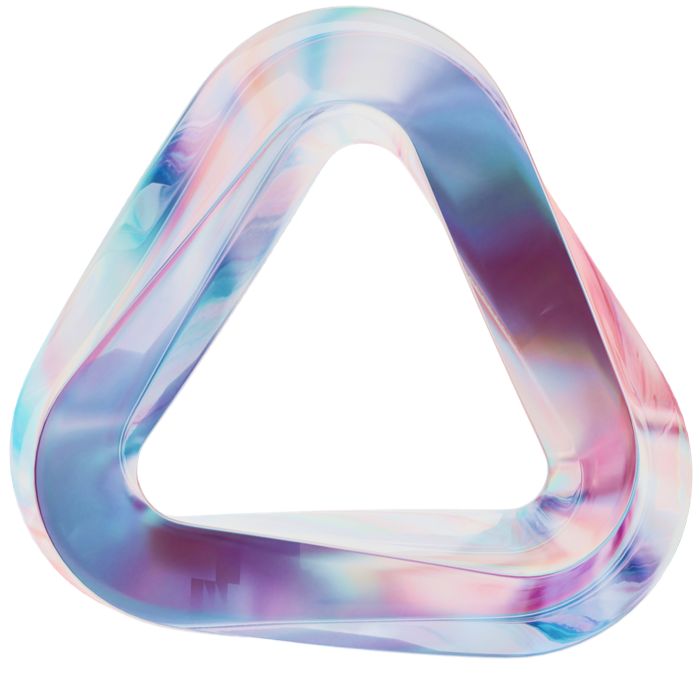
09 Projects — 2024–2026
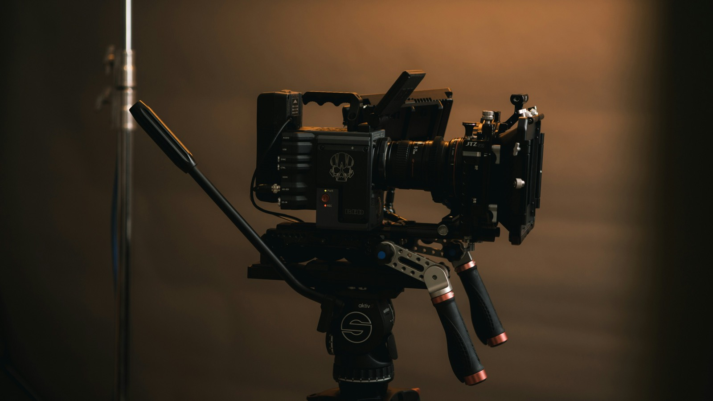
채널 리브랜딩으로 방송사 아이덴티티를 완전히 재구축.
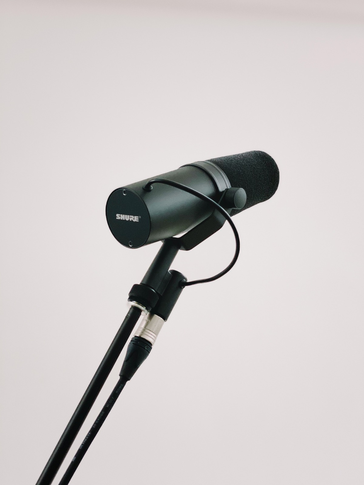
라이브 스트리밍 OS로 실시간 편성을 하나로 통합.
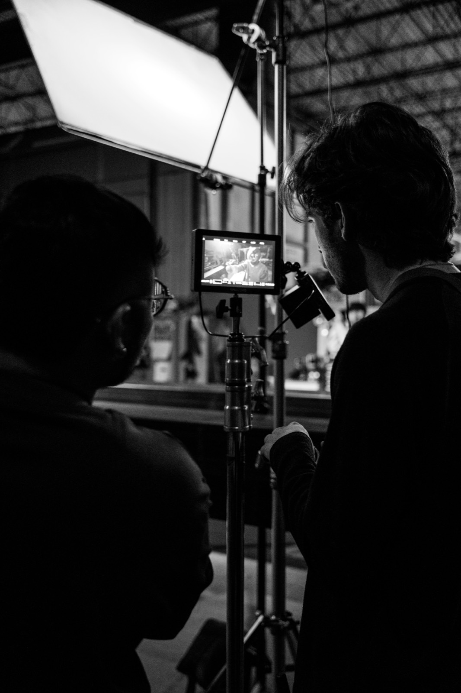
장편 콘텐츠를 AI가 자동 분할·자막·비율 변환하는 숏폼 배급 파이프라인.
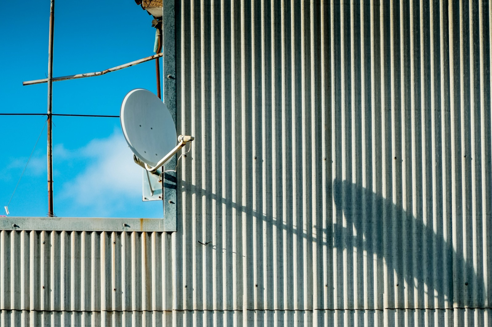
팟캐스트 네트워크 오디오 제작 전체를 위탁 운영.
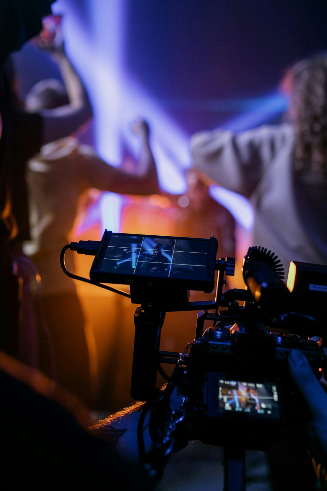
멀티 플랫폼 동시 송출과 실시간 데이터 기반 편성 대시보드.
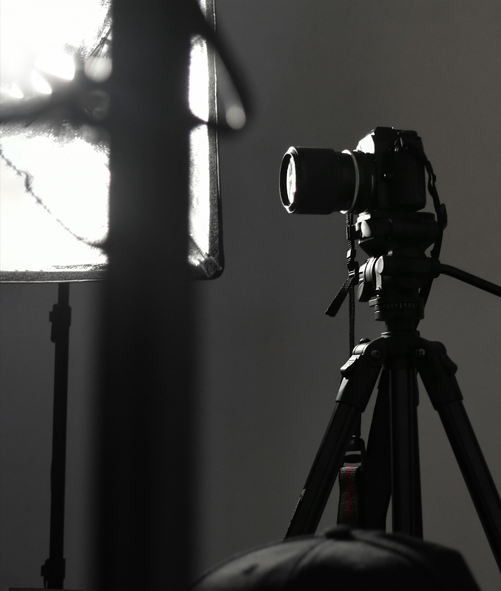
현장 촬영 장비 전면 지원, 셋업부터 송출까지 원스톱.
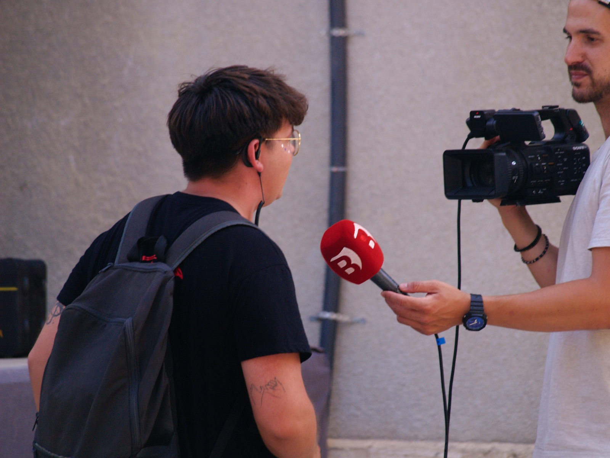
거리 인터뷰 포맷으로 로컬 뉴스 도달률 확대.
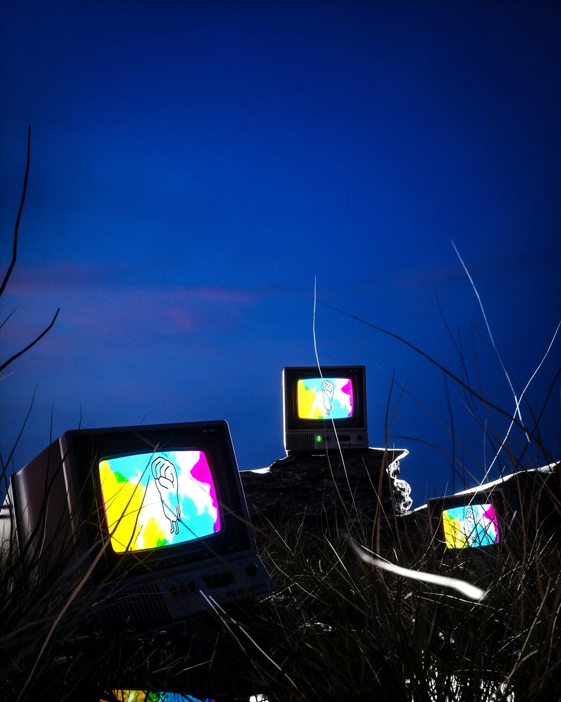
레트로 브라운관 감성으로 완성한 아카이브 채널 리브랜딩.
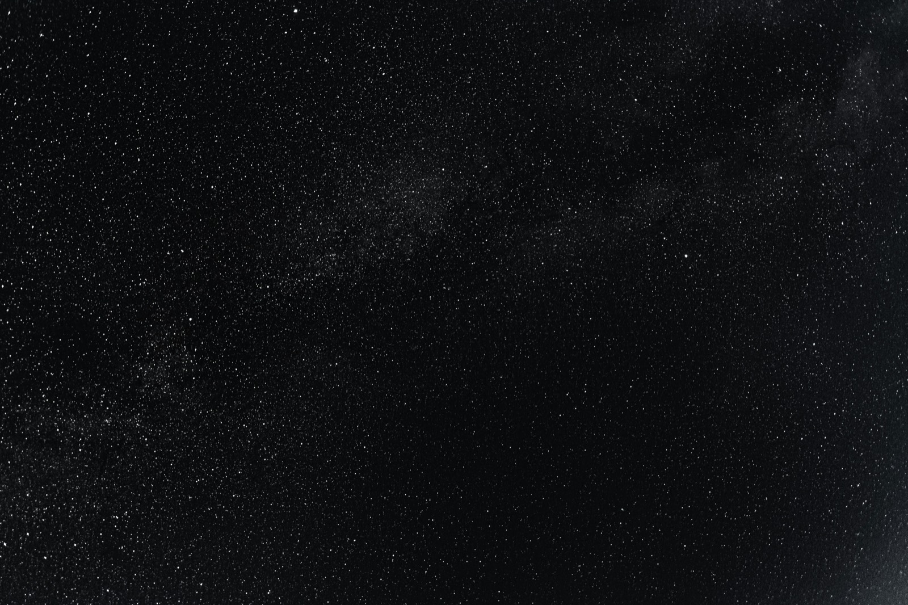
야외 라이브 송출, 어떤 하늘 아래서도 끊기지 않는 신호.
"좋은 방송은 기술이 아니라 함께 만드는 사람들의 밀도에서 나온다고 믿습니다. 품질과 다양성에 대한 책임감이 우리의 강점입니다."by 한지민, CJ ENM 편성팀
PRISM과 작업하면서 방송 퀄리티에 대한 기준 자체가 바뀌었습니다. 디테일을 놓치지 않는 팀입니다. 편성 회의마다 나오던 자잘한 리터치 요청이 거의 사라졌고, 제작 일정도 예측 가능한 수준으로 안정됐습니다. 다음 시즌도 고민 없이 다시 맡길 생각입니다.
숏폼 오토메이션 도입 이후 채널 전환 콘텐츠 제작 속도가 세 배 빨라졌습니다. 자막·비율 변환을 사람이 손대지 않아도 되니 팀이 기획에만 집중할 수 있게 됐고, 실험적인 포맷도 부담 없이 자주 시도해볼 수 있게 됐습니다. 정말 만족스러운 파트너십입니다.
실시간 그래픽 패키지가 시즌 내내 단 한 번도 흔들리지 않았습니다. 믿고 맡길 수 있는 파트너입니다. 경기마다 바뀌는 변수에도 항상 대응 방안을 미리 준비해와서 방송 사고 걱정 없이 진행할 수 있었고, 현장 커뮤니케이션도 군더더기 없이 깔끔했습니다.
오디오와 영상 제작을 하나의 워크플로우로 묶어준 덕분에 팀 운영이 훨씬 단순해졌습니다. 서로 다른 툴과 담당자를 오가며 생기던 커뮤니케이션 비용이 크게 줄었고, 새 멤버가 합류해도 온보딩이 훨씬 빨라졌습니다. 협업 방식 자체를 바꿔준 파트너입니다.
데이터 대시보드 덕분에 편성 회의 시간이 절반으로 줄었습니다. 이전엔 여러 팀에서 취합한 수치를 다시 정리하느라 회의 전날이 항상 바빴는데, 이제는 대시보드 하나만 열어도 논의가 바로 시작됩니다. 의사결정 속도 자체가 달라졌습니다.
브랜드 톤을 정확히 이해하고 채널 리브랜딩을 완성도 있게 마무리해준 팀입니다. 레퍼런스 몇 장만 공유했는데도 저희가 말로 설명하지 못했던 뉘앙스까지 짚어내서 놀랐고, 수정 요청에 대한 대응도 언제나 빨랐습니다. 다음 캠페인도 함께하고 싶습니다.